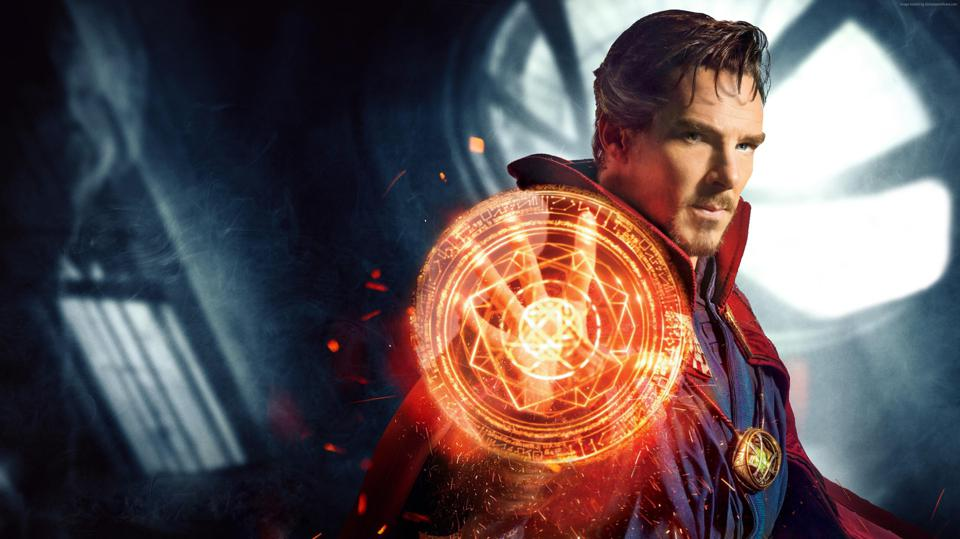

About Doctor Strange
Strange was once a brilliant but arrogant neurosurgeon, until a car accident crippled his hands.[13] When modern medicine failed him, he embarked on a journey to Kamar-Taj in Tibet, where he was trained by the Ancient One. He healed his hands and learned more about Magic, eventually becoming a Master of the Mystic Arts.
Sorcerer Supreme for Earth-616
Stranges Characteristics
- Hair - Black, White streaks, Dyed
- Hair - Black, White streaks, Dyed
- Hair - Black, White streaks, Dyed
Powers and Abilities
Strange studied magic under the Ancient One for seven years and returned to the United States in the 1970s. Strange became a mystic consultant, establishing his Sanctum Sanctorum in New York's Greenwich Village. He was attended by Wong, latest in a centuries-old bloodline that had served the Ancient One, and who had become both Strange's servant and his friend.
- Time Manipulation
- Time Manipulation
- Time Manipulation
- Time Manipulation